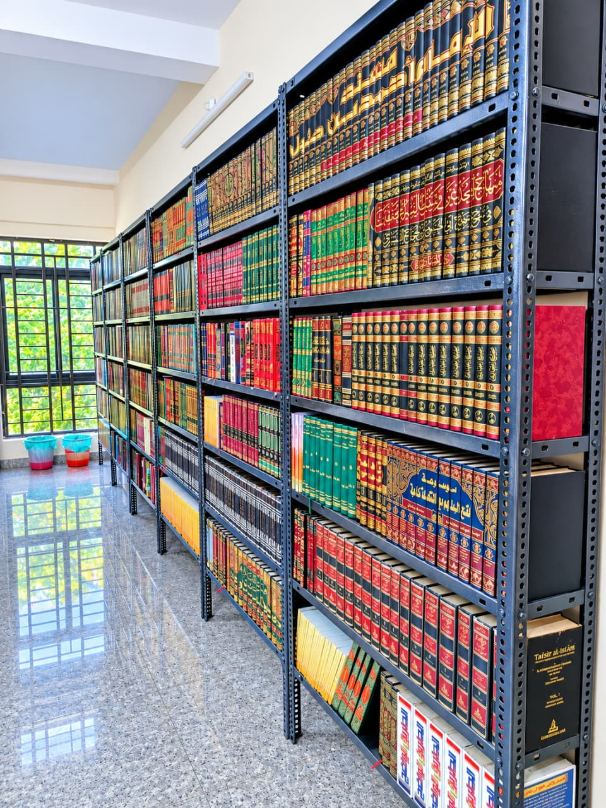

جامعہ اسلامیہ دریاباد ایک عظیم دینی درسگاہ ہے جہاں قرآن، حدیث، فقہ اور دیگر اسلامی علوم کے ساتھ ساتھ عصری تعلیم کا بھی بہترین انتظام ہے۔ ہمارا مقصد ایسی نسل تیار کرنا ہے جو دین اور دنیا دونوں میں کامیابی حاصل کر سکے۔
جامعہ اسلامیہ دریاباد کی تاسیس 1990ء مطابق 1411ھ میں ہوئی۔ یہ جامعہ اہل حدیث تعلیمی و رفاہی سوسائٹی کے زیرِ نگرانی کام کر رہا ہے۔ جامعہ میں ایک عظیم الشان جنرل لائبریری (مکتبہ عامہ) بھی موجود ہے جس میں تفسیر، عقائد، احادیث اور فقہ اسلامی پر معتبر کتابوں کا ذخیرہ ہے۔ اسی کے تحت 'مکتبۃ التوزیع' سے اہم دعوتی اور تحقیقی رسائل کی مفت تقسیم بھی ہوتی ہے۔
نئے تعلیمی سال کے لیے داخلے جاری ہیں۔ داخلہ کے اصول و ضوابط اور فارم یہاں سے حاصل کریں۔
داخلہ فارم ڈاؤنلوڈ کریںجامعہ میں ششماہی اور سالانہ امتحانات کا انعقاد نہایت شفافیت کے ساتھ کیا جاتا ہے۔ امتحانات کا ٹائم ٹیبل اور دیگر ہدایات یہاں شائع کی جاتی ہیں۔
جامعہ کے طلبہ کی علمی و ادبی تحریریں، مقالات اور شعری ذوق پر مبنی مجلہ۔
یہ جامعہ کے افق صحافت سے طلوع ہونے والا دینی، علمی اور اصلاحی مجلہ ہے۔ سنہ 2006ء سے 2010ء تک یہ مجلہ 'احتساب' کے نام سے شائع ہوتا رہا ہے۔

سالانہ جلسہ دستار بندی - ۲۰۲۶